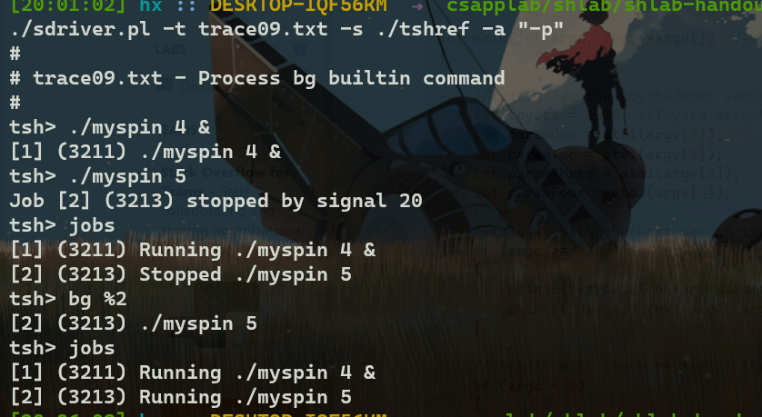
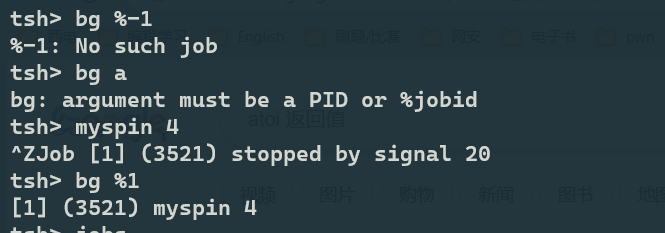
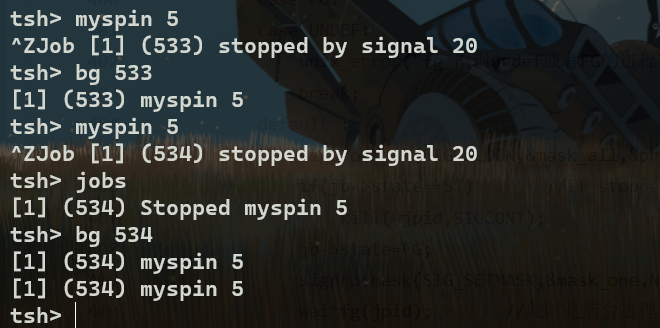
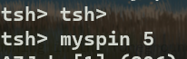

Shell lab
记录一下shell lab 的求解过程
Shell lab
test09
tshref 的结果显示如下：  明显要求构造bg的内部命令 使用atoi将字符串转化为数字，但是使用该函数前先要检验argv[1]是否存在，否则会导致段错误 如果转化失败或者没有该数字对应的job或pid ，就输出相应数字，报告错误  测试时发现，bg有时会输出两遍,一时没想明白：  经过不断调试发现，最终在发现进程从暂停中恢复时也会向父进程发送信号sigchild，而有时输出两遍，大概率是信号中断了输出，导致多输出了一遍。 显然解决方案是把printf语句移动到信号continue发送给子进程之前。可是这样并不能解决问题，因为不能将所有的printf都移到发送信号前，例如：  将shell的名字输出了两遍。想到一个办法就是在发送信号后，sleep一会儿，这样就算sleep被信号中断也不会发生什么。
注意
当我把wait的参数去掉continue时，发现这种情况不再发生，不知道为什么。
test10
要求构造fg的内部命令。
fg呢分为把后台进程变为前台，以及暂停的进程变为前台(无所谓之前进程是前台或后台)。
注意调用waitfg要处于屏蔽sigchld信号状态，否则可能导致子进程结束在调用waitfg之前。
两题的代码如下: 1
2
3
4
5
6
7
8
9
10
11
12
13
14
15
16
17
18
19
20
21
22
23
24
25
26
27
28
29
30
31
32
33
34
35
36
37
38
39
40
41
42
43
44
45
46
47
48
49
50
51
52
53
54
55
56
57
58
59
60
61
62
63
64
65
66
67
68
69
70
71
72
73
74
75
76
77
78
79
80
81
82
83
84
85
86
87
88
89
90
91
92
93void do_bgfg(char **argv)
{
int pid,jid;
//int isjob = 0;
int bg = 0;
sigset_t mask_one,prev_one;
sigaddset(&mask_one,SIGCHLD);
if(argv[1] == NULL ){
printf("bg command requires PID or %%jobid argument\n");
return;
}
if((argv[1][0] != '%' && (argv[1][0] < '0' || argv[1][0] > '9' ))){
printf("%s: argument must be a PID or %%jobid\n",argv[0]);
return;
}
if(!strcmp(argv[0],"bg"))
bg = 1;
if(argv[1][0] != '%'){
pid = atoi(&argv[1][0]);
/*
if(pid == 0){
printf("%s: No such job\n",argv[1]);
return;
}
*/
struct job_t *j = getjobpid(jobs,pid);
if(!j)
{
printf("%s: No such job\n",argv[1]);
return;
}
//isjob = 1;
if(bg){
//printf("first\n");
j->state = BG;
printf("[%d] (%d) %s", j->jid, j->pid, j->cmdline);
killpg(pid,SIGCONT);
}else{
// 进入前要对sigchld信号进行屏蔽，否则可能死循环。
sigprocmask(SIG_BLOCK,&mask_one,&prev_one);
if(j->state == ST)
killpg(pid,SIGCONT);
j->state = FG;
waitfg(j->pid);
sigprocmask(SIG_SETMASK,&prev_one,NULL);
}
}else {
jid = atoi(&argv[1][1]);
/*
if(jid == 0){
printf("(%s): No such process\n",argv[1]);
return;
}
*/
struct job_t *j = getjobjid(jobs,jid);
if(!j){
printf("(%s): No such process\n",argv[1]);
return;
}
if(bg){
j->state = BG;
printf("[%d] (%d) %s", j->jid, j->pid, j->cmdline);
killpg(j->pid,SIGCONT);
}else{
// 进入前要对sigchld信号进行屏蔽，否则可能死循环。
//sigprocmask(SIG_BLOCK,&mask_one,&prev_one);
//printf("fg\n");
if(j->state== ST)
killpg(j->pid,SIGCONT);
j->state = FG;
waitfg(j->pid);
//sigprocmask(SIG_SETMASK,&prev_one,NULL);
}
}
return;
}
后面的test
能做到这里，前面的应该都实现了吧。